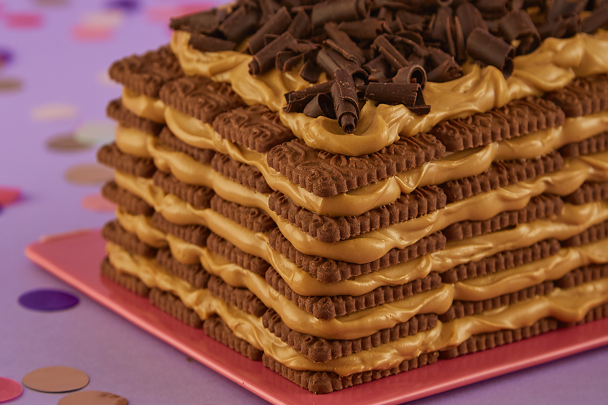

Chocotorta

Ingredientes
- 1 paquete de chocolinas
- 1 pote de queso casancrem
- 1 pote de dulce de leche
- Café
Preparación
- Mezclar el queso casancrem con el dulce de leche
- Aplicar la mezcla sobre la capa de chocolinas mojadas en café
- Cubrir con una nueva base de chocolinas
- Repetir a gusto este procedimiento